Cleanout and haul-off
Remove junk, unwanted furniture, garage clutter, leftover materials, and anything making the property feel crowded or unfinished.
Austin listing-prep crew
Sale Ready Austin handles the unglamorous work that decides whether a listing feels tired or market ready. We clean out the leftover stuff, knock out the visible repairs, reset the yard, and finish with the kind of detail work that helps photos, showings, and first impressions land better.
One crew for occupied homes, vacant listings, inherited properties, and last-minute punch lists.
What we do
Most listings do not need a major renovation. They need the visible distractions removed, the deferred maintenance tightened up, and the house reset so buyers focus on the property instead of the to-do list.
Remove junk, unwanted furniture, garage clutter, leftover materials, and anything making the property feel crowded or unfinished.
Whole-home deep cleaning, kitchen and bath reset, baseboards, surfaces, dust, odors, and move-out level cleanup.
Nail holes, scuffs, small drywall repair, touch-up painting, trim cleanup, and cosmetic fixes that buyers notice quickly.
Outlet covers, switch plates, bulbs, hardware, doors, trim, caulk, smoke detectors, and other small items that make a home feel neglected.
Carpet removal, carpet cleaning, flooring prep, surface cleanup, grout refresh, and the details that make rooms feel cleaner and newer.
Mowing, weeds, brush cleanup, edging, entry cleanup, pressure washing, and outside presentation that improves first impression.
Final reset before listing photos or showings, including room decluttering, furniture simplification, and presentation tightening.
One scope that can combine multiple categories of work so the seller or agent is not chasing separate crews.
Built for
When the seller is still living there, we help knock out the visible work without turning the whole prep process into another full-time job.
Once a place is empty, the flaws stand out. We help tighten the presentation so rooms read cleaner, brighter, and more intentional.
Inherited homes, former rentals, and move-out properties often need the same mix of cleanout, cleanup, touch-ups, and curb appeal work to be listable.
Results
Representative sale-ready scopes that show the difference between “not yet” and “ready to market.”
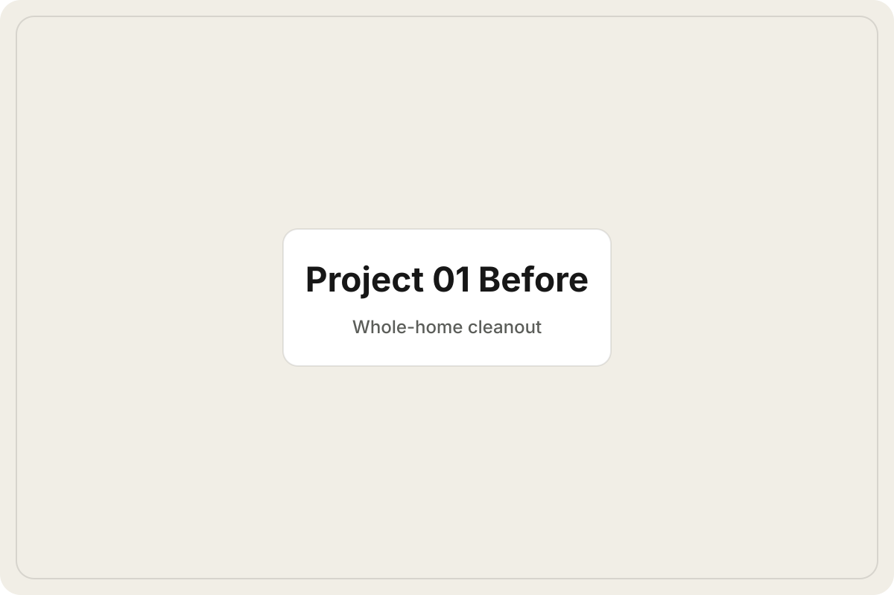
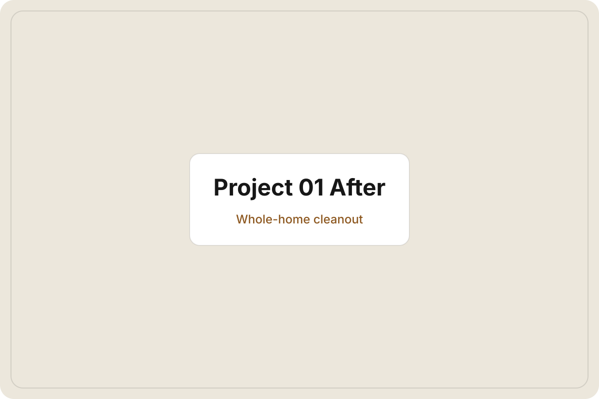
Once the excess is gone, buyers can actually read the rooms instead of the clutter.
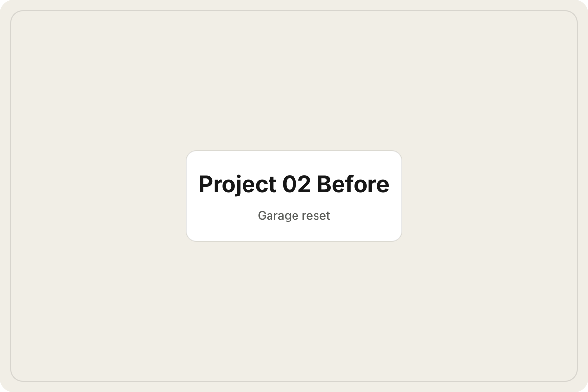
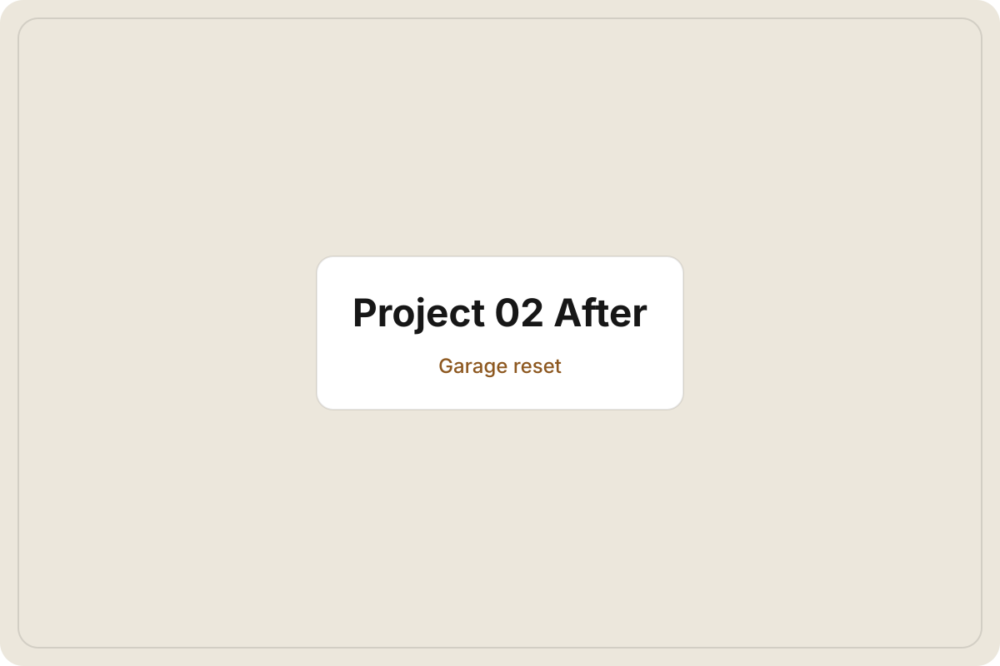
Garages read better when they feel usable instead of like an unfinished storage issue.
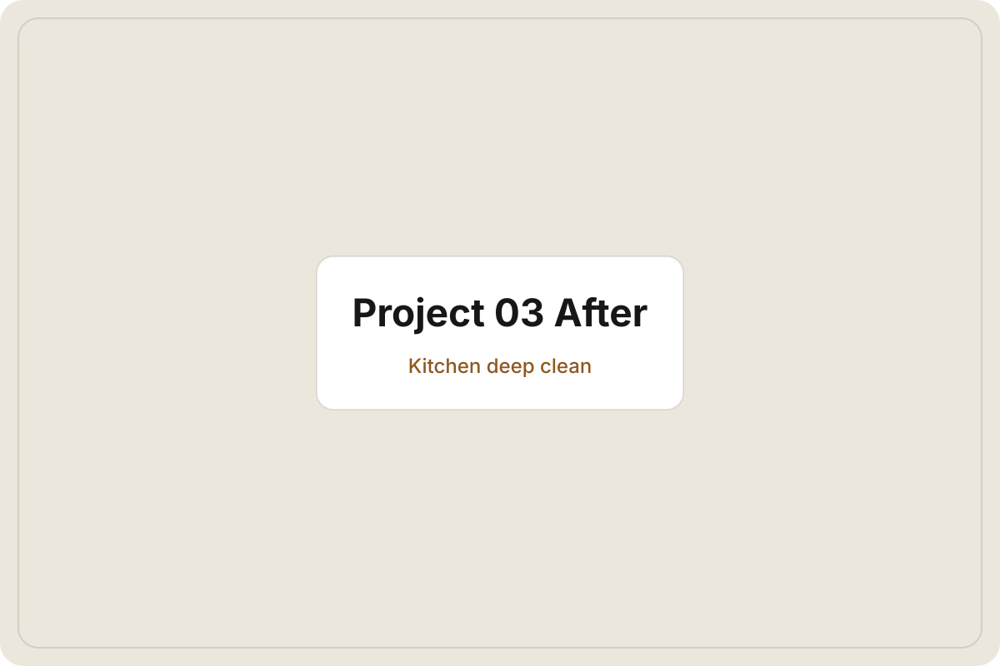
A brighter kitchen lifts the tone of the whole listing fast.
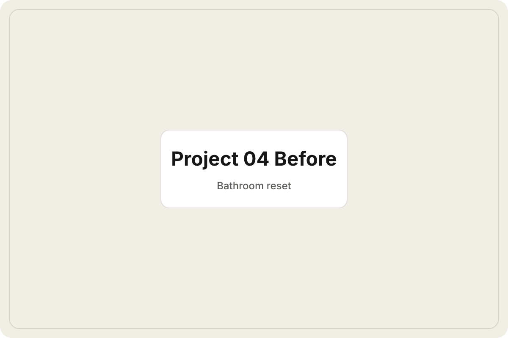
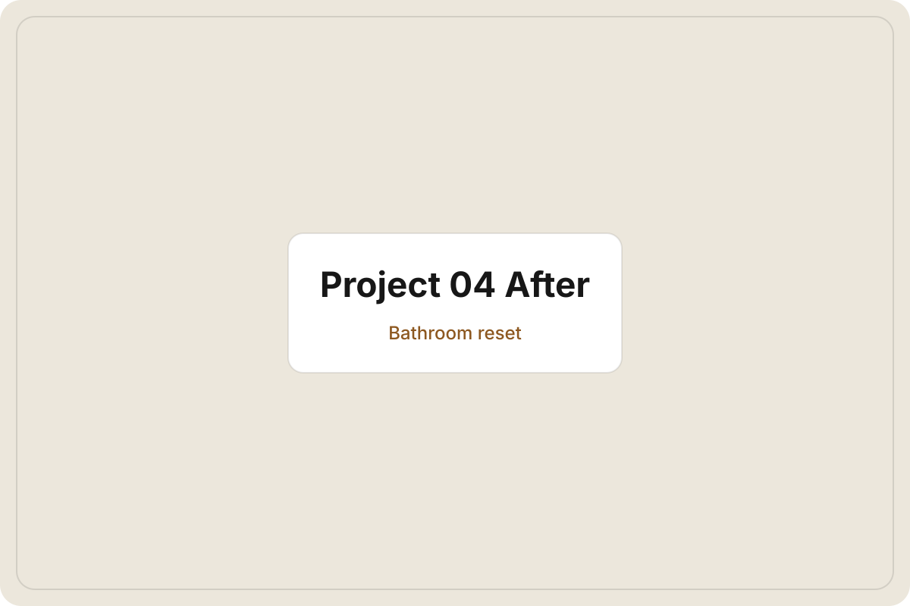
Clean, sharp bathrooms signal that the rest of the home has been cared for too.
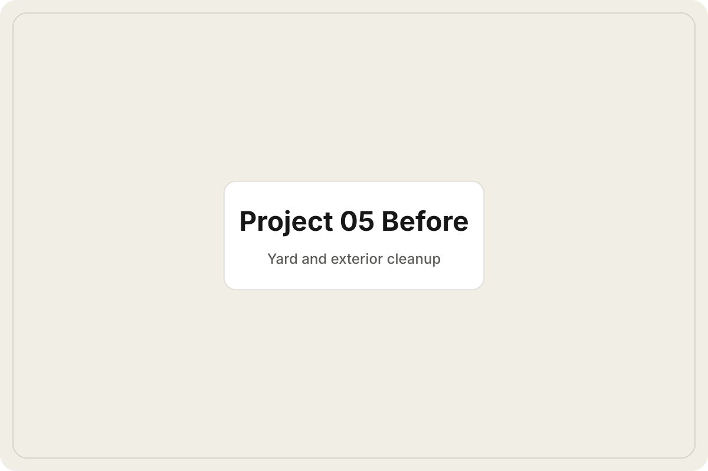
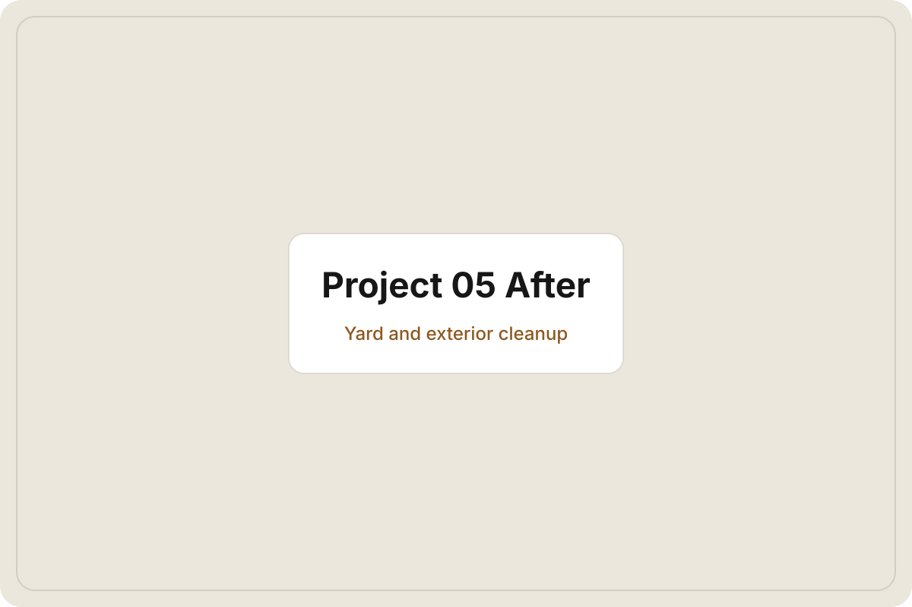
Better curb appeal starts before anyone makes it to the front door.
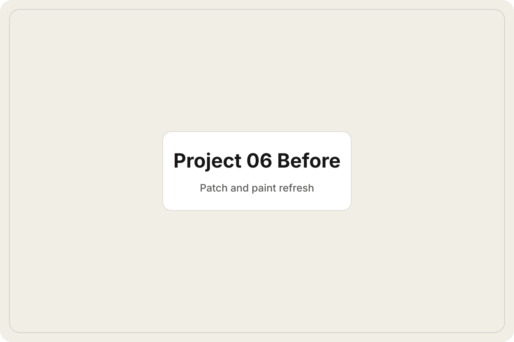
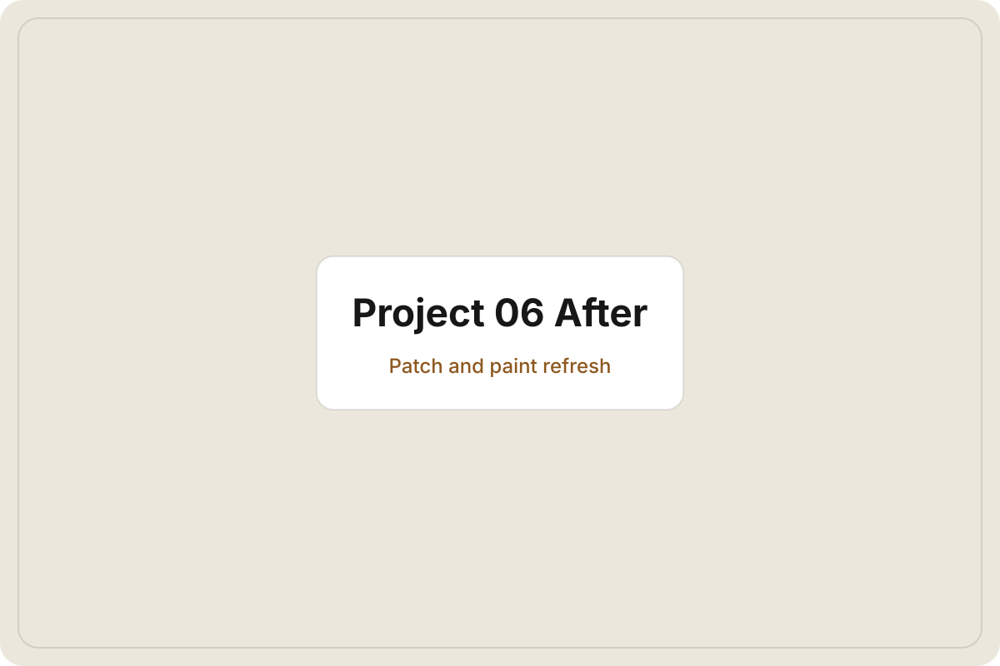
Small cosmetic fixes often do the most to make a place feel maintained.
How it works
We need enough context to see the condition, the timing, and what has to happen first.
We outline the visible work that will move the property closer to photo-ready and showing-ready.
Cleanout, touch-ups, deep cleaning, curb appeal, and the nagging details that make a home feel unfinished.
The property photographs better, shows better, and feels more intentional to buyers walking in cold.
If a property also needs outside specialty trades, Sale Ready Austin can still take care of the visible prep work that keeps the listing from feeling delayed, neglected, or unfinished.
Text or email a few photos, the neighborhood, and your target timeline. We will tell you what we can handle, what should happen first, and what it will take to get the property feeling sale ready.